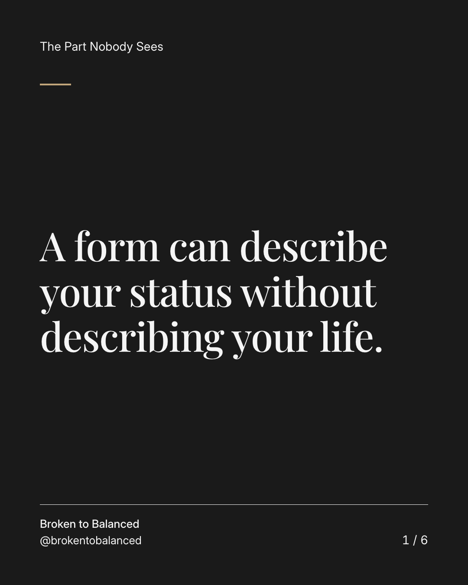
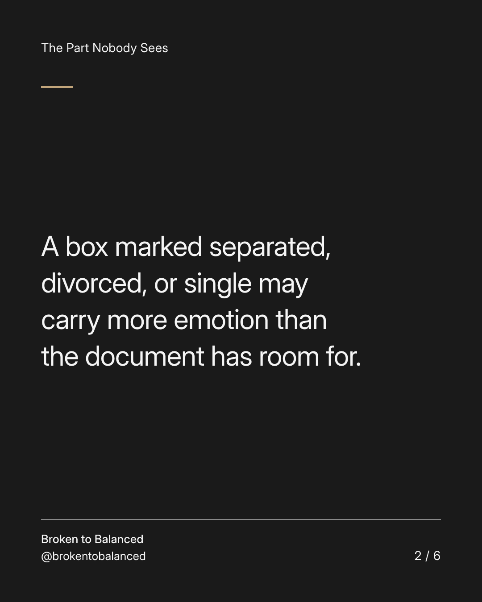
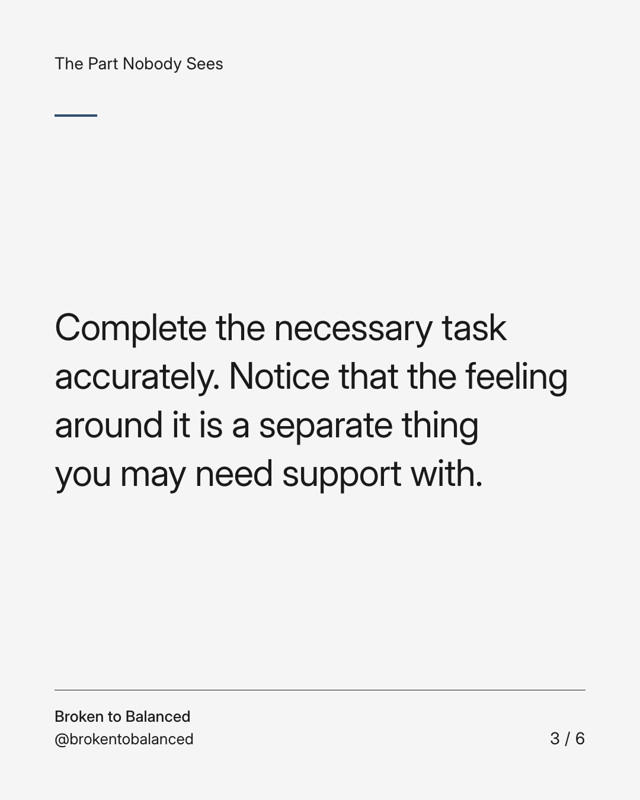
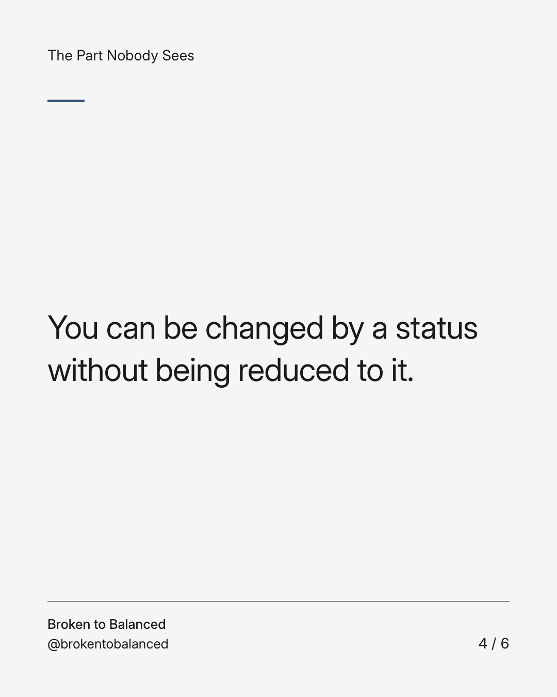
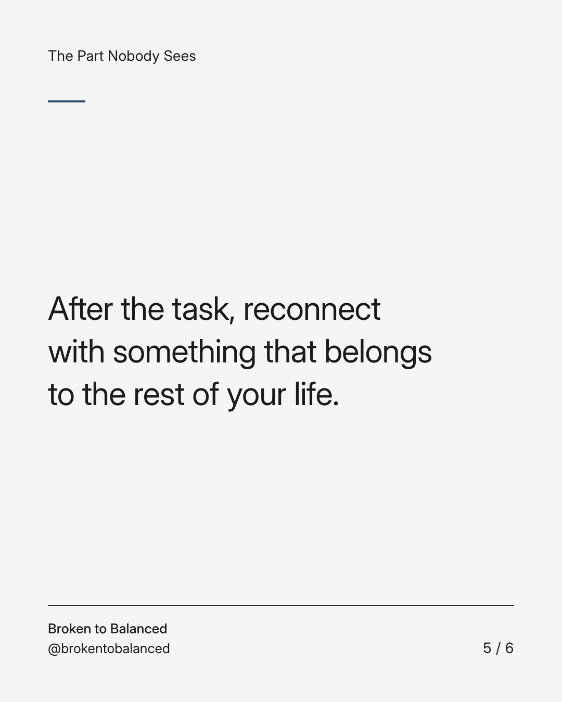
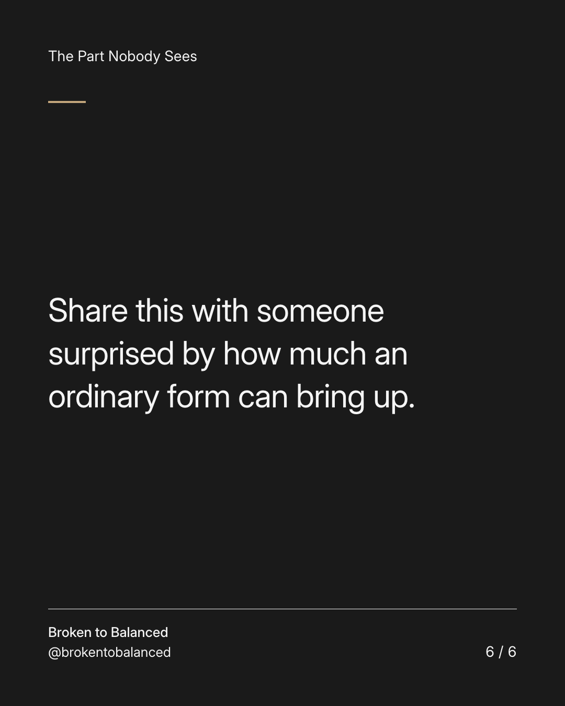

Exact text and accessibility text
A form can describe your status without describing your life.
Slide 1 of 6. A form can describe your status without describing your life.


Exact text and accessibility text
A box marked separated, divorced, or single may carry more emotion than the document has room for.
Slide 2 of 6. A box marked separated, divorced, or single may carry more emotion than the document has room for.


Exact text and accessibility text
Complete the necessary task accurately. Notice that the feeling around it is a separate thing you may need support with.
Slide 3 of 6. Complete the necessary task accurately. Notice that the feeling around it is a separate thing you may need support with.


Exact text and accessibility text
You can be changed by a status without being reduced to it.
Slide 4 of 6. You can be changed by a status without being reduced to it.


Exact text and accessibility text
After the task, reconnect with something that belongs to the rest of your life.
Slide 5 of 6. After the task, reconnect with something that belongs to the rest of your life.


Exact text and accessibility text
Share this with someone surprised by how much an ordinary form can bring up.
Slide 6 of 6. Share this with someone surprised by how much an ordinary form can bring up.
Exact caption
Plain-text fallback: select and copy the caption.